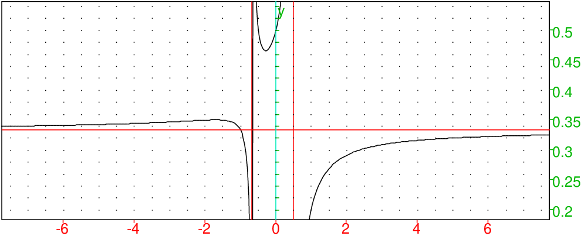
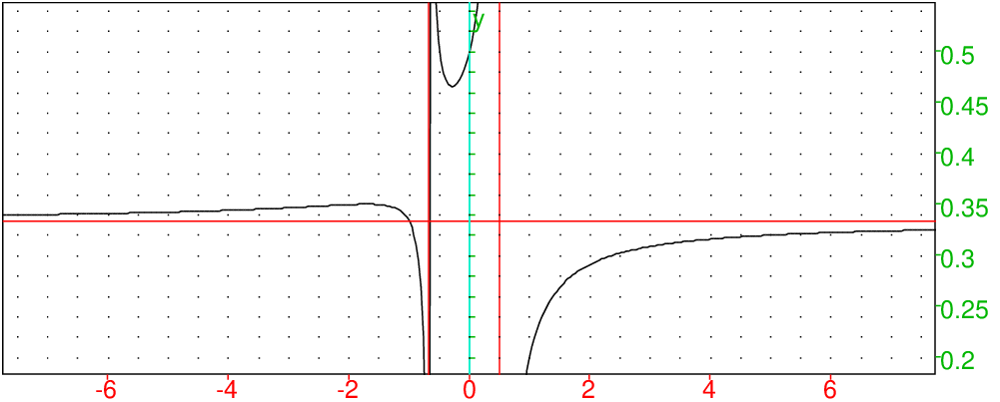

Retour à la page personnelle de Bernard Parisse.Chapitre 2 Étude de fonctions
2.1 Exercice : étude de f(x)=2x2−1/6x2+x−2
-
Domaine de définition
On tape :
solve(6x^2+x-2)
On obtient :
[(-2)/3,1/2]
Donc f est définie sur ℝ−{−2/3,1/2}
- Dérivée
On tape :
factor(diff((2x^2-1)/(6x^2+x-2))
On obtient :
(2*x^+4*x+1)/((2*x-1)^2*(3*x+2)^2)
On tape :
normal(solve(2*x^+4*x+1))
On obtient :
[(-sqrt(2)-2)/2,(sqrt(2)-2)/2]
On tape :
evalf([(-sqrt(2)-2)/2,(sqrt(2)-2)/2])
On obtient :
[-1.70710678119,-0.292893218813]
On tape :
subst((2x^2-1)/(6x^2+x-2),x=-1.70710678119)
On obtient :
0.35044026276
On tape :
subst((2x^2-1)/(6x^2+x-2),x=-0.292893218813)
On obtient :
0.465886267852
f a donc deux extremum en ≃ (-1.71,0.35) et (-0.29,0.47)
Donc f est :
croissante sur ]−∞;(−√2−2)/2]
décroissante sur [(−√2−2)/2; −2/3[
décroissante sur ]−2/3;(√2−2)/2]
croissante sur [(√2−2)/;1/2[
croissante sur ]1/2;+∞[ - Branches infinies
On tape :
limit((2x^2-1)/(6x^2+x-2),x=inf)
On obtient :
1/3
On tape :
limit((2x^2-1)/(6x^2+x-2),x=-inf)
On obtient :
1/3
Donc y=1/3 est asymptote.
On tape :
limit((2x^2-1)/(6x^2+x-2),x=-2/3,-1)
On obtient :
-infinity
On tape :
limit((2x^2-1)/(6x^2+x-2),x=-2/3,1)
On obtient :
+(infinity)
Donc x=−2/3 est asymptote.
On tape :
limit((2x^2-1)/(6x^2+x-2),x=1/2,-1)
On obtient :
+infinity
On tape :
limit((2x^2-1)/(6x^2+x-2),x=1/2,1)
On obtient :
-infinity
Donc x=1/2 est asymptote.
- Graphe
On tape :
plotfunc((2x^2-1)/(6x^2+x-2),x=-8..8),
affichage(droite(x=1/2),droite(x=-2/3),droite(y=1/3),1)
On obtient :

2.2 Exercice : étude de f(x)= acos (sin(x))+ asin (cos(x))
-
Domaine de définition et période.
- Montrer que :
f(x+π)=f(π/2−x)=π−f(x).
- Graphe de f et préciser son centre de symétrie et son axe de symétrie.
- Valeur de f(x) sur [0,π/2] et sur π/2,π].
Rappels
On a :
sin(x)=cos(π/2−x)
cos(x)=sin(π/2−x)
sin(x+π)=−sin(x)
cos(x+pi)=−cos(x)
asin (x) est une bijection de [-1,1] sur [−π/2,π/2]
sin( asin (x))=x et
si x∈ [−π/2,π/2] alors asin (sin(x))=x
acos (x) est une bijection de [-1,1] sur [0,π]
cos( acos (x))=x et
si x∈ [0,π] alors acos (cos(x))=x
asin (−x)=− asin (x)
acos (−x)=π− acos (x)
asin (x)+ acos (x)=π/2
asin (x)′=1/√(1−x2)
acos (x)′=−1/√(1−x2)
La solution avec Xcas
On tape :
f(x):=acos(sin(x))+asin(cos(x))
donc
f(x):=acos(cos(pi/2-x))+asin(sin(pi/2-x))
-
f(x+π)=f(π/2−x)=π−f(x).
On tape :
simplify(f(x+pi)+f(x))
On obtient :
pi
En effet :
f(x+pi)=acos(-sin(x))+asin(-cos(x))
et on a :
acos (−sin(x))=π− acos (sin(x))
asin (−cos(x))=− asin (cos(x))
D’où le rèsultat.
On tape :
simplify(f(pi/2-x)+f(x))
On obtient :
pi
En effet :
f(pi/2-x)=acos(cos(x))+asin(sin(x))
et on a :
acos (sin(x))+ asin (sin(x)=π/2
asin (cos(x))+ acos (cos(x))=π/2
D’où le rèsultat. - Graphe de f.
On tape :
f(x):=acos(sin(x))+asin(cos(x))
plotfunc(f(x))
On obtient :

Le point S(π/4,π/2 est un centre de symétrie car
on a f(x)+f(pi/2−x)=π donc les points A(x,f(x) et B(π/2−x,f(π/2−x)
sont 2 points de la courbe qui sont symétriques par rapport à S.
En effet 1/2*(x+π/2−x)=π/4 et
1/2*(f(x)+f(π/2−x))=π/2.
La droite d’équation x=3π/4 est un axe de symétrie de la courbe.
En effet f(x+π)=f(π/2−x) et donc les points
C(x+π,f(x+π) et D(π/2−x,f(π/2−x) sont symétriques par rapport à la droite x=3π/4
puisque 1/2*(x+π+π/2−x)=3π/4 - Valeur de f(x) sur [0,π/2] et sur π/2,π].
On tape :
assume(x>0 and x<pi/2)
simplify(f(x))
On obtient :
pi-2*x
Si x∈ [0,π/2] on a π/2−x∈ [0,π/2] donc
f(x):= acos (cos(π/2−x))+ asin (sin(π/2−x))=π−2x
On tape :
assume(x>=pi/2 and x<=pi)
simplify(f(x))
On obtient :
0
Si x∈ [π/2,π] on a x−π/2∈ [0,π/2] donc
f(x):= acos (cos(π/2−x))+ asin (sin(π/2−x))=
acos (cos(x−π/2))− asin (sin(x−π/2−))=x−π/2−(x−π/2)=0
Retour à la page personnelle de Bernard Parisse.